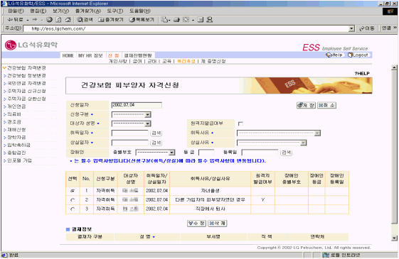

| Ⅰ. 개요 및 신청절차 |
| 1. 개요 |
| 가족사항에 변동이 있는 경우 (예 : 출생, 사망 등) 건강보험의 취득 또는 상실신청을 한다. 건강보험 자격변경을 신청하기 위해서는 반드시 대상자가 가족사항에 등록되어 있어야 한다. 먼저 가족사항을 확인 후 신청한다. |
| |
| 2. 절차 |
|
|
| |
| |
| Ⅱ. 화면사용법 및 유의사항 |
| <그림 1. 건강보험 자격변경 신청 화면> |
|  |
| |
| 1) 신청구분 : 자격취득/자격상실 |
| 신청구분에 따라 취득사유나 상실사유를 선택한다. |
| 2) 대상자 성명 : 피부양자 자격을 취득 또는 상실한 가족구성원으로서 가족사항에 등록되어 있는 |
| 인원에 한함. |
| 3) 취득일자 및 상실일자는 그 사유가 발생한 날짜를 의미한다.(예 : 출생일, 사망일 등) |
| 4) 장애인의 경우 종별부호, 등급 및 등록일을 기재한다. |
|
| |
| |
| Ⅲ. 제출서류 |
| 1) 호적등본, 주민등록등본, 건강보험증 각 1부 (제출처 : 인력개발팀, 인사총무팀) |
| ※ 사망의 경우 : 1. 사망확인서 또는 사망을 확인 할 수 있는 서류 |
| 2. 건강보험증 |
| 3. 장제비을 받을 통장 COPY본 |
| |
|